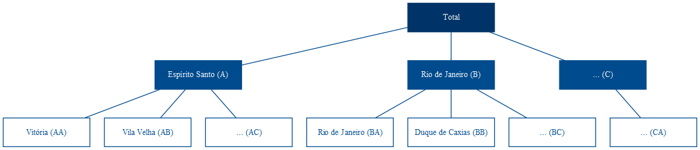
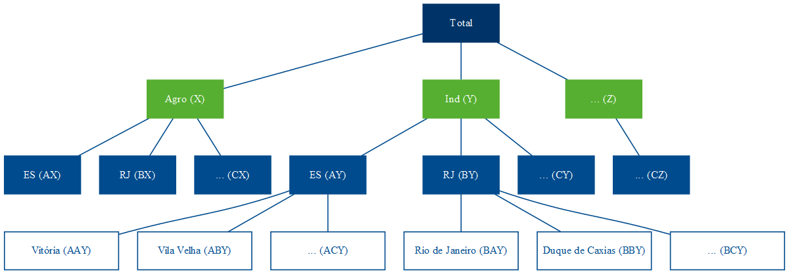

For almost a decade now, every year around this time I work with time series forecasting at Banestes. When it comes to setting goals and budget objectives (balances, revenues, expenses, etc.), knowing how to model and forecast is a real lifesaver.
Of course, forecasts alone should not be adopted as final or absolute truth, since they do not use managerial information and stakeholder expectations, for example. But they are a reasonable starting point that serves as a basis for building expectations, action plans, etc.
1 Hierarchical and grouped time series
Hierarchical time series are those that can be naturally aggregated or disaggregated in a nested structure (R. J. Hyndman and Athanasopoulos 2021). To illustrate, take the Brazilian GDP series. It can be disaggregated by state, which in turn can be disaggregated by municipality.
This structure can be represented by equations for any level of aggregation.
\[ \begin{align} y_t &= y_{A,t} + y_{B,t} + y_{C,t} \\ y_t &= y_{AA,t} + y_{AB,t} + y_{AC,t} + y_{BA,t} + y_{BC,t} + y_{CA,t} \\ y_{A,t} &= y_{AA,t} + y_{AB,t} + y_{AC,t} \end{align} \]
Thus, the national aggregate can be represented only by the state aggregates, as in (1), or as the aggregate of municipalities (2). The aggregate for the state of Espírito Santo is represented by (3).
Alternatively, we can describe the complete structure in matrix form:
\[ \begin{bmatrix} y_{t} \\ y_{A, t} \\ y_{B, t} \\ y_{C, t} \\ y_{AA, t} \\ y_{AB, t} \\ y_{AC, t} \\ y_{BA, t} \\ y_{BB, t} \\ y_{BC, t} \\ y_{CA, t} \end{bmatrix} = \begin{bmatrix} 1 & 1 & 1 & 1 & 1 & 1 & 1 \\ 1 & 1 & 1 & 0 & 0 & 0 & 0 \\ 0 & 0 & 0 & 1 & 1 & 1 & 0 \\ 0 & 0 & 0 & 0 & 0 & 0 & 1 \\ 1 & 0 & 0 & 0 & 0 & 0 & 0 \\ 0 & 1 & 0 & 0 & 0 & 0 & 0 \\ 0 & 0 & 1 & 0 & 0 & 0 & 0 \\ 0 & 0 & 0 & 1 & 0 & 0 & 0 \\ 0 & 0 & 0 & 0 & 1 & 0 & 0 \\ 0 & 0 & 0 & 0 & 0 & 1 & 0 \\ 0 & 0 & 0 & 0 & 0 & 0 & 1 \\ \end{bmatrix} \begin{bmatrix} y_{AA, t} \\ y_{AB, t} \\ y_{AC, t} \\ y_{BA, t} \\ y_{BB, t} \\ y_{BC, t} \\ y_{CA, t} \end{bmatrix} \]
On the other hand, GDP can also be disaggregated in a cross-sectional way according to economic activity—crops, livestock, manufacturing, extractive industry, capital goods, intermediate goods, clothing trade, automotive, services, etc. This structure cannot be naturally disaggregated in a single way, as in the hierarchy of states and municipalities. It cannot be nested by a single attribute like geography. This type of structure is called grouped series.
Combining both, we have the structure of hierarchical grouped series. Unlike the hierarchical structure, which can only be aggregated in one way—as with municipalities under states—the addition of the grouped structure can occur either above (Figure 3) or below (Figure 4) the hierarchy.


In matrix notation, the structure of Figure 4 is represented as below. Formally, the left-hand side of the equation is composed of the \(n\)-dimensional vector \(\mathbf{y}_t\) with all observations at time \(t\) for all hierarchy levels. The right-hand side is composed of the summing matrix \(\mathbf{S}\) of dimension \(n \times m\) that defines the equations for every aggregation level, and the matrix \(\mathbf{b}_t\) composed of the series at the most disaggregated level.
\[\begin{equation} \mathbf{y}_t=\mathbf{Sb}_t \end{equation}\]
\[\begin{equation} \begin{bmatrix} y_{t} \\ y_{A, t} \\ y_{B, t} \\ y_{C, t} \\ y_{X, t} \\ y_{Y, t} \\ y_{Z, t} \\ y_{AX, t} \\ y_{AY, t} \\ y_{AZ, t} \\ y_{BX, t} \\ y_{BY, t} \\ y_{BZ, t} \\ y_{CX, t} \\ y_{CY, t} \\ y_{CZ, t} \end{bmatrix} = \begin{bmatrix} 1 & 1 & 1 & 1 & 1 & 1 & 1 & 1 & 1 \\ 1 & 1 & 1 & 0 & 0 & 0 & 0 & 0 & 0 \\ 0 & 0 & 0 & 1 & 1 & 1 & 0 & 0 & 0 \\ 0 & 0 & 0 & 0 & 0 & 0 & 1 & 1 & 1 \\ 1 & 0 & 0 & 1 & 0 & 0 & 1 & 0 & 0 \\ 0 & 1 & 0 & 0 & 1 & 0 & 0 & 1 & 0 \\ 0 & 0 & 1 & 0 & 0 & 1 & 0 & 0 & 1 \\ 1 & 0 & 0 & 0 & 0 & 0 & 0 & 0 & 0 \\ 0 & 1 & 0 & 0 & 0 & 0 & 0 & 0 & 0 \\ 0 & 0 & 1 & 0 & 0 & 0 & 0 & 0 & 0 \\ 0 & 0 & 0 & 1 & 0 & 0 & 0 & 0 & 0 \\ 0 & 0 & 0 & 0 & 1 & 0 & 0 & 0 & 0 \\ 0 & 0 & 0 & 0 & 0 & 1 & 0 & 0 & 0 \\ 0 & 0 & 0 & 0 & 0 & 0 & 1 & 0 & 0 \\ 0 & 0 & 0 & 0 & 0 & 0 & 0 & 1 & 0 \\ 0 & 0 & 0 & 0 & 0 & 0 & 0 & 0 & 1 \end{bmatrix} \begin{bmatrix} y_{AX, t} \\ y_{AY, t} \\ y_{AZ, t} \\ y_{BX, t} \\ y_{BY, t} \\ y_{BZ, t} \\ y_{CX, t} \\ y_{CY, t} \\ y_{CZ, t} \end{bmatrix} \end{equation}\]
2 Top-down and bottom-up approaches
Perhaps the most intuitive ways to think about forecasts for these types of structures are the top-down and bottom-up approaches. Take the structure described in Figure 1, for example. We can forecast for the horizon \(h\) of the aggregate Brazilian GDP, represented at the top of the hierarchy by Total (6), and then distribute the forecasted values proportionally among states and municipalities.
\[\begin{equation} \hat{y}_{T+h | T} = E[y_{T+h} | \Omega_T] \end{equation}\]
This is the top-down approach. In it, the forecasts for the most disaggregated levels of the hierarchy are determined by a proportion \(p_i\) of the aggregate level. For example, the forecasts for Vitória are given by equation (7).
\[\begin{equation} \tilde{y}_{AA, T+h | T} = p_{1}\hat{y}_{T+h | T} \end{equation}\]
For this, we have to define a matrix with all these weights, which, following the formulation of R. J. Hyndman and Athanasopoulos (2021), we will call \(\mathbf{G}\):
\[\begin{equation} \mathbf{G} = \begin{bmatrix} p_1 & 0 & 0 & 0 & 0 & 0 & 0 & 0 & 0 & 0 & 0 \\ p_2 & 0 & 0 & 0 & 0 & 0 & 0 & 0 & 0 & 0 & 0 \\ p_3 & 0 & 0 & 0 & 0 & 0 & 0 & 0 & 0 & 0 & 0 \\ p_4 & 0 & 0 & 0 & 0 & 0 & 0 & 0 & 0 & 0 & 0 \\ p_5 & 0 & 0 & 0 & 0 & 0 & 0 & 0 & 0 & 0 & 0 \\ p_6 & 0 & 0 & 0 & 0 & 0 & 0 & 0 & 0 & 0 & 0 \\ p_7 & 0 & 0 & 0 & 0 & 0 & 0 & 0 & 0 & 0 & 0 \end{bmatrix} \end{equation}\]
\(\mathbf{G}\) is an \(m \times n\) matrix that multiplies the matrix \(\hat{\mathbf{y}}_{T+h|T}\), which in turn is composed of the base forecasts—the individual forecasts for all aggregation levels. The equation for the top-down approach will then be:
\[\begin{equation} \mathbf{\tilde{y}}_{T+h | T} = \mathbf{SG\hat{y}}_{T+h | T} \end{equation}\]
In matrix notation for the structure of Figure 1, we have:
\[\begin{equation} \begin{bmatrix} \tilde{y}_{t} \\ \tilde{y}_{A, t} \\ \tilde{y}_{B, t} \\ \tilde{y}_{C, t} \\ \tilde{y}_{AA, t} \\ \tilde{y}_{AB, t} \\ \tilde{y}_{AC, t} \\ \tilde{y}_{BA, t} \\ \tilde{y}_{BB, t} \\ \tilde{y}_{BC, t} \\ \tilde{y}_{CA, t} \end{bmatrix} = \mathbf{S} \begin{bmatrix} p_1 & 0 & 0 & 0 & 0 & 0 & 0 & 0 & 0 & 0 & 0 \\ p_2 & 0 & 0 & 0 & 0 & 0 & 0 & 0 & 0 & 0 & 0 \\ p_3 & 0 & 0 & 0 & 0 & 0 & 0 & 0 & 0 & 0 & 0 \\ p_4 & 0 & 0 & 0 & 0 & 0 & 0 & 0 & 0 & 0 & 0 \\ p_5 & 0 & 0 & 0 & 0 & 0 & 0 & 0 & 0 & 0 & 0 \\ p_6 & 0 & 0 & 0 & 0 & 0 & 0 & 0 & 0 & 0 & 0 \\ p_7 & 0 & 0 & 0 & 0 & 0 & 0 & 0 & 0 & 0 & 0 \end{bmatrix} \begin{bmatrix} \hat{y}_{T+h|T} \\ \hat{y}_{A, T+h|T} \\ \hat{y}_{B, T+h|T} \\ \hat{y}_{C, T+h|T} \\ \hat{y}_{AA, T+h|T} \\ \hat{y}_{AB, T+h|T} \\ \hat{y}_{AC, T+h|T} \\ \hat{y}_{BA, T+h|T} \\ \hat{y}_{BB, T+h|T} \\ \hat{y}_{BC, T+h|T} \\ \hat{y}_{CA, T+h|T} \end{bmatrix} \end{equation}\]
Which gives us a proportion of the total for each element at the most disaggregated level. \[\begin{equation} \begin{bmatrix} \tilde{y}_{t} \\ \tilde{y}_{A, t} \\ \tilde{y}_{B, t} \\ \tilde{y}_{C, t} \\ \tilde{y}_{AA, t} \\ \tilde{y}_{AB, t} \\ \tilde{y}_{AC, t} \\ \tilde{y}_{BA, t} \\ \tilde{y}_{BB, t} \\ \tilde{y}_{BC, t} \\ \tilde{y}_{CA, t} \end{bmatrix} = \mathbf{S} \begin{bmatrix} p_1\hat{y}_{T+h|T} \\ p_2\hat{y}_{T+h|T} \\ p_3\hat{y}_{T+h|T} \\ p_4\hat{y}_{T+h|T} \\ p_5\hat{y}_{T+h|T} \\ p_6\hat{y}_{T+h|T} \\ p_7\hat{y}_{T+h|T} \end{bmatrix} \end{equation}\]
Replacing the matrix \(\mathbf{S}\), we have the equations that define each forecast in the structure as a function of proportions of the aggregate forecast.
\[\begin{equation} \begin{bmatrix} \tilde{y}_{t} \\ \tilde{y}_{A, t} \\ \tilde{y}_{B, t} \\ \tilde{y}_{C, t} \\ \tilde{y}_{AA, t} \\ \tilde{y}_{AB, t} \\ \tilde{y}_{AC, t} \\ \tilde{y}_{BA, t} \\ \tilde{y}_{BB, t} \\ \tilde{y}_{BC, t} \\ \tilde{y}_{CA, t} \end{bmatrix} = \begin{bmatrix} 1 & 1 & 1 & 1 & 1 & 1 & 1 \\ 1 & 1 & 1 & 0 & 0 & 0 & 0 \\ 0 & 0 & 0 & 1 & 1 & 1 & 0 \\ 0 & 0 & 0 & 0 & 0 & 0 & 1 \\ 1 & 0 & 0 & 0 & 0 & 0 & 0 \\ 0 & 1 & 0 & 0 & 0 & 0 & 0 \\ 0 & 0 & 1 & 0 & 0 & 0 & 0 \\ 0 & 0 & 0 & 1 & 0 & 0 & 0 \\ 0 & 0 & 0 & 0 & 1 & 0 & 0 \\ 0 & 0 & 0 & 0 & 0 & 1 & 0 \\ 0 & 0 & 0 & 0 & 0 & 0 & 1 \end{bmatrix} \begin{bmatrix} p_1\hat{y}_{T+h|T} \\ p_2\hat{y}_{T+h|T} \\ p_3\hat{y}_{T+h|T} \\ p_4\hat{y}_{T+h|T} \\ p_5\hat{y}_{T+h|T} \\ p_6\hat{y}_{T+h|T} \\ p_7\hat{y}_{T+h|T} \end{bmatrix} \end{equation}\]
The bottom-up approach, on the other hand, starts from the opposite reasoning and defines the forecasts for each element of the structure from the forecasts of the most disaggregated elements. For this, just modify the matrix \(\mathbf{G}\).
\[\begin{equation} \mathbf{G} = \begin{bmatrix} 0 & 0 & 0 & 0 & 1 & 0 & 0 & 0 & 0 & 0 & 0 \\ 0 & 0 & 0 & 0 & 0 & 1 & 0 & 0 & 0 & 0 & 0 \\ 0 & 0 & 0 & 0 & 0 & 0 & 1 & 0 & 0 & 0 & 0 \\ 0 & 0 & 0 & 0 & 0 & 0 & 0 & 1 & 0 & 0 & 0 \\ 0 & 0 & 0 & 0 & 0 & 0 & 0 & 0 & 1 & 0 & 0 \\ 0 & 0 & 0 & 0 & 0 & 0 & 0 & 0 & 0 & 1 & 0 \\ 0 & 0 & 0 & 0 & 0 & 0 & 0 & 0 & 0 & 0 & 1 \end{bmatrix} \end{equation}\]
Which results in the desired equations. Therefore, \(\mathbf{G}\) defines the approach—whether top-down or bottom-up—and \(\mathbf{S}\) defines how the forecasts are summed to form the forecast equations for each element of the structure.
\[\begin{equation} \begin{bmatrix} \tilde{y}_{t} \\ \tilde{y}_{A, t} \\ \tilde{y}_{B, t} \\ \tilde{y}_{C, t} \\ \tilde{y}_{AA, t} \\ \tilde{y}_{AB, t} \\ \tilde{y}_{AC, t} \\ \tilde{y}_{BA, t} \\ \tilde{y}_{BB, t} \\ \tilde{y}_{BC, t} \\ \tilde{y}_{CA, t} \end{bmatrix} = \begin{bmatrix} 1 & 1 & 1 & 1 & 1 & 1 & 1 \\ 1 & 1 & 1 & 0 & 0 & 0 & 0 \\ 0 & 0 & 0 & 1 & 1 & 1 & 0 \\ 0 & 0 & 0 & 0 & 0 & 0 & 1 \\ 1 & 0 & 0 & 0 & 0 & 0 & 0 \\ 0 & 1 & 0 & 0 & 0 & 0 & 0 \\ 0 & 0 & 1 & 0 & 0 & 0 & 0 \\ 0 & 0 & 0 & 1 & 0 & 0 & 0 \\ 0 & 0 & 0 & 0 & 1 & 0 & 0 \\ 0 & 0 & 0 & 0 & 0 & 1 & 0 \\ 0 & 0 & 0 & 0 & 0 & 0 & 1 \end{bmatrix} \begin{bmatrix} \hat{y}_{AA, T+h|T} \\ \hat{y}_{AB, T+h|T} \\ \hat{y}_{AC, T+h|T} \\ \hat{y}_{BA, T+h|T} \\ \hat{y}_{BB, T+h|T} \\ \hat{y}_{BC, T+h|T} \\ \hat{y}_{CA, T+h|T} \end{bmatrix} \end{equation}\]
3 Coherence and reconciliation
Whether by summing the forecasts from the most disaggregated level to form the upper levels of the hierarchy (bottom-up) or proportionally distributing the forecasts from the most aggregated level (top-down), the vector \(\mathbf{\tilde{y}}_t\) represents the coherent forecasts. This means that the forecasts “match”, i.e., they are correctly totaled—the forecasts for each aggregate element correspond to the sum of the forecasts for the lower levels of the hierarchy. This is ensured by the multiplication of the matrices \(\mathbf{SG}\).
Without this pre-multiplication, nothing would guarantee the coherence of the forecasts. Taking the structure of Figure 1 as an example, it would be an unlikely coincidence for the forecasts of the aggregate for the state of Espírito Santo to be exactly the sum of the individual forecasts of its municipalities. This is because each series may follow a different process (e.g., ARIMA) with different errors and variances.
The methods for generating coherent forecasts from base forecasts are called reconciliation methods. The traditional reconciliation methods presented, top-down and bottom-up, use limited information. In the top-down method, only information from the most aggregated level is used—which is why only the first column in (8) is nonzero. In the bottom-up approach, only information from the most disaggregated levels is used, resulting in the \(m \times m\) identity submatrix in (13), while the columns representing the most aggregated levels are zero.
Alternatively, we can think of any matrix \(\mathbf{G}\) that uses all available information and has some properties that ensure that the coherent forecasts have the smallest possible error. This is the research problem addressed in optimal reconciliation, and it is a relatively new topic. That is, point forecasts for hierarchical time series are an old thing. At least since the 1970s, research has been published on bottom-up and top-down approaches, their advantages and disadvantages, and attempts to define the best method1. However, it is only in R. J. Hyndman et al. (2011) that a practical approach is formalized that uses all available information (i.e., the forecasts of all elements at all levels of the hierarchy) by estimating the matrix \(\mathbf{G}\) via generalized least squares (GLS) regression.
However, to be able to estimate the model by GLS, the variance-covariance matrix of the errors is needed. R. J. Hyndman et al. (2011) use the coherence error matrix, i.e., the difference between the reconciled forecasts and the base forecasts, which is rank-deficient and unidentified and therefore cannot be estimated. The authors circumvent this problem by adopting, instead of the variance-covariance matrix of the errors, a constant diagonal matrix, i.e., they assume constant variance of the reconciliation errors, which ends up falling into the estimation of \(\mathbf{G}\) by ordinary least squares (OLS).
Estimation by this method results in an optimal reconciliation that depends only on the matrix \(\mathbf{S}\), i.e., the hierarchical structure, and is independent of the variance and covariance of the base forecasts \(\mathbf{\hat{y}_{T+h}}\)—which is not a satisfactory conclusion.
Rob J. Hyndman, Lee, and Wang (2016) attempt to improve the method by using the estimated variances of the base forecasts (within-sample) as an estimate for the variance-covariance matrix of the reconciliation errors, so as to use them as weights and perform optimal reconciliation by weighted least squares (WLS). Thus, more accurate base forecasts have greater weight than noisier ones. However, they do not provide a theoretical justification for using the diagonal of the variance-covariance matrix of \(\mathbf{\hat{e}_{t}}\).
Wickramasuriya, Athanasopoulos, and Hyndman (2019) argue that what really matters is that the reconciled forecasts have the smallest error—it does not matter that the reconciled forecast is closer to the base forecast, but that the reconciled forecasts are as accurate as possible, since that is what will be used! So, they correct the optimal reconciliation approach to the objective of minimizing the errors of the reconciled forecasts \(\mathbf{\tilde{e}_{t+h}} = \mathbf{y_{t+h} - \mathbf{\tilde{y}_{t+h}}}\), instead of the reconciliation errors of the base forecasts \(\mathbf{\hat{y}_{t+h}} - \mathbf{\tilde{y}_{t+h}}\). Since this implies minimizing the variance of \(\mathbf{\tilde{e}_{t+h}}\), i.e., minimizing the sum of the diagonal, the trace, of the variance-covariance matrix of \(\mathbf{\tilde{e}_{t+h}}\), they called this method Minimum Trace (MinT). In parallel, they use the triangle inequality to show that the reconciled forecasts obtained by this method are at least as good as the base forecasts.
And, from 2021 onwards, there have been interesting developments in the probabilistic extension of this theoretical body (and this is where I am conducting my master’s research). Panagiotelis et al. (2021) reinterpret the literature on coherence and reconciliation of point forecasts from a geometric approach, providing alternative proofs for previous conclusions while also providing new theorems. In addition, Panagiotelis et al. (2021) extend this geometric interpretation to the probabilistic context, providing parametric and non-parametric (via bootstrapping) methods for reconciliation of probabilistic forecasts, i.e., to reconcile forecasts \(\hat{y}_t\) obtained from the entire distribution, not just the mean.
4 Anyway…
If you made it this far, I recommend you find something more interesting to do with your life. In the next post (maybe) I’ll show how to do all this in practice with our beloved #RStats.
References
Athanasopoulos, George, Roman A. Ahmed, and Rob J. Hyndman. 2009. “Hierarchical Forecasts for Australian Domestic Tourism.” International Journal of Forecasting 25 (1): 146–66. https://doi.org/https://doi.org/10.1016/j.ijforecast.2008.07.004.
Hyndman, R. J., R. A. Ahmed, G. Athanasopoulos, and H. L. Shang. 2011. “Optimal Combination Forecasts for Hierarquical Time Series.” Computational Statistics and Data Analysis 55: 2579–89.
Hyndman, R. J., and G. Athanasopoulos. 2021. Forecasting: Principles and Practice. 3rd ed. Melbourne, Australia: OTexts. https://otexts.com/fpp3/.
Hyndman, Rob J., Alan J. Lee, and Earo Wang. 2016. “Fast Computation of Reconciled Forecasts for Hierarchical and Grouped Time Series.” Computational Statistics and Data Analysis 97: 16–32. https://doi.org/https://doi.org/10.1016/j.csda.2015.11.007.
Panagiotelis, Anastasios, George Athanasopoulos, Puwasala Gamakumara, and Rob J. Hyndman. 2021. “Forecast Reconciliation: A Geometric View with New Insights on Bias Correction.” International Journal of Forecasting 37 (1): 343–59. https://doi.org/https://doi.org/10.1016/j.ijforecast.2020.06.004.
Wickramasuriya, Shanika L., George Athanasopoulos, and Rob J. Hyndman. 2019. “Optimal Forecast Reconciliation for Hierarchical and Grouped Time Series Through Trace Minimization.” Journal of the American Statistical Association 114 (526): 804–19. https://doi.org/10.1080/01621459.2018.1448825.